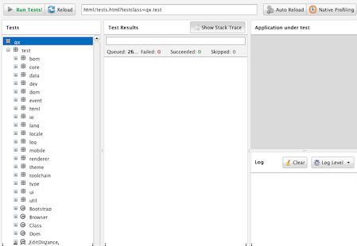

Test Runner¶
"Test Runner" is a unit testing framework that fully supports testing qooxdoo classes. It is similar to but does not require JSUnit or any other JavaScript unit testing framework. If you look at the component section of a qooxdoo distribution under component/testrunner/, you will find the Test Runner sources, together with a mockup test class. In the framework/ section you can create a Test Runner instance with all test classes from the qooxdoo framework by running:
./generate.py test
Test Runner provides a convenient interface to test classes that have been written to that end. You can run single tests, or run a whole suite of them at once.
Note
See the Test Runner in action in the online demo.
The Test Runner framework can also be deployed for your own application. It provides a GUI, a layer of infrastructure and a certain interface for arbitrary test classes. So now you can write your own test classes and take advantage of the Test Runner environment.
How to deploy Test Runner for your own development¶
This section assumes that your qooxdoo application bears on the structure of the qooxdoo skeleton application. Then this is what you have to do:
Writing Test Classes¶
- You have to code test classes that perform the individual tests. These test classes have to comply to the following constraints:
- They have to be within the name space of your application.
- They have to be derived from qx.dev.unit.TestCase.
- They have to define member functions with names starting with test*. These methods will be available as individual tests.
- Apart from that you are free to add other member functions, properties etc., and to instantiate other classes to your own content. But you will usually want to instantiate classes of your current application and invoke their methods in the test functions.
- In order to communicate the test results back to the Test Runner framework exceptions are used. No exception means the test went fine, throwing an exception from the test method signals a failure. Return values from the test methods are not evaluated.
- To model your test method behaviour, you can use the methods inherited from qx.dev.unit.TestCase which encapsulate exceptions in the form of assertions:
- assert, assertFalse, assertEquals, assertNumber, ... - These functions take values which are compared (either among each other or to some predefined value) and a message string, and raise an exception if the comparison fails.
- A similar list of methods of the form assert*DebugOn is available, which are only evaluated if the debug environment setting qx.debug is on (see Environment).
- See the documentation for the qx.dev.unit.TestCase class for more information on the available assertions.
Generic setUp and tearDown¶
Test classes can optionally define a setUp method. This is used to initialize common objects needed by some or all of the tests in the class. Since setUp is executed before each test, it helps to ensure that each test function runs in a "clean" environment. Similarly, a method named tearDown will be executed after each test, e.g. to dispose any objects created by setUp or the test itself.
Specific tearDown¶
For cases where the generic class-wide tearDown isn't enough, methods using the naming convention tearDown<TestFunctionName> can be defined. A method named e.g. tearDownTestFoo would be called after testFoo and the generic tearDown of the class were executed.
Asynchronous Tests¶
Asynchronous tests enable testing for methods that aren't called directly, such as event handlers:
- Test classes inheriting from qx.dev.unit.TestCase have a wait() method that stops the test's execution and sets a timeout. wait() should always be the last function to be called in a test since any code following it is ignored. wait() has two optional arguments: The amount of time to wait in milliseconds (defaults to 5000) and a function to be executed when the timeout is reached. If no function is specified, reaching the timeout will cause an exception to be thrown and the test to fail.
- The resume() method is used to (surprise!) resume a waiting test. It takes two arguments, a function to be executed when the test is resumed, typically containing assertions, and the object context it should be executed in.
Here's an example: In our test, we want to send an AJAX request to the local web server, then assert if the response is what we expect it to be.
testAjaxRequest : function()
{
var request = new qx.io.request.Xhr("/index.html");
request.addListener("success", function (e) {
this.resume(function() {
this.assertEquals(200, request.getStatus());
}, this);
}, this);
request.send();
this.wait(10000);
}
Defining Test Requirements¶
Requirements are conditions that must be met before a test can be run. For example, a test might rely on the application having been loaded over HTTPS and would give false results otherwise. Requirements are defined for individual tests; if one or more aren't satisfied, the test code won't be executed and the test will be marked as "skipped" in the Test Runner's results list.
Using Requirements¶
To make use of the requirements feature, test classes must include the MRequirements mixin. The mixin defines a method require that takes an array of strings: The requirement IDs. This method is either called from the setUp method or from a test function before the actual logic of the test, e.g.:
testBackendRequest : function()
{
this.require(["backend"]);
// test code goes here
}
require then searches the current test instance for a method that verifies the listed requirements: The naming convention is "has" + the requirement ID with the first letter capitalized, e.g. hasBackend. This method is the called with the requirement ID as the only parameter. If it returns true, the test code will be executed. Otherwise a RequirementError is thrown. The Test Runner will catch these and mark the test as "skipped" in the results list. Any test code after the require call will not be executed.
If no "has" method for a given feature is found, qx.core.Environment will be checked for a key that matches the feature name. This way, any Environment key that has a boolean value can be used as a test requirement, e.g.:
this.require(["event.touch", "css.textoverflow"]);
Note that only Environment keys with synchronous checks are supported.
Spies, stubs and mocks¶
Spies are test functions that records details for all its calls. Stubs are spies with pre-programmed behavior. Mocks are fake methods are like spies and stubs, but also come with pre-programmed expectations. Generally speaking, spies, stubs and mocks are fakes that allow fine-grained unit testing. They constitute important tools for test driven development.
In order to use fakes in your tests, test classes must include the MMock mixin. Here are some example tests that demonstrate the usage of spies and stubs.
"test: spy": function() {
var spy = this.spy();
spy();
this.assertCalled(spy);
},
"test: stub": function() {
var whoami = this.stub();
whoami.returns("Affe");
this.assertEquals("Affe", whoami());
}
MMock also provides custom assertions tailored to work with fakes. Whenever possible, custom assertions should be used instead of lower level assertions because they provide more detailed error messages.
"test: assert called": function() {
var spy = this.sinon.spy();
// Fail test deliberately
// spy();
// Recommended
this.assertCalledOnce(spy);
// --> expected spy to have been called once but was called 0 times
// Lower level assertion
this.assertTrue(spy.called);
this.assertEquals(1, spy.callCount);
// --> Called assertTrue with 'false'
// --> Expected '1' but found '0'!
}
Mocks are different from spies and stubs. They have pre-programmed expectations, meaning that unexpected calls fail your tests. Mocks allow to enforce implementation details without explicit assertions.
"test: mock": function() {
var obj = {method: function() {}};
var mock = this.sinon.mock(obj);
mock.expects("method").once();
obj.method();
// Would fail test (Unexpected second call)
// obj.method();
mock.verify();
},
For more details, please refer to the API documentation of MMock. Additional examples can be found in qx.test.dev.unit.Sinon.
MMock is based on Sinon.JS. The original sinon object can be retrieved by calling qx.dev.unit.Sinon.getSinon().
Sandboxing¶
Stubs can override original behavior. To prevent tests from leaking, it is recommended to restore fakes on tear down. Every fake (including stubs) created by MMock is contained within a sandbox. Here is how to restore all fakes recorded in the sandbox.
tearDown: function() {
this.getSandbox().restore();
}
Faking XMLHttpRequest¶
To replace the native implementation of XMLHttpRequest (XHR), call useFakeXMLHttpRequest(). The fake implementation behaves just like the original implementation only that no HTTP backend is required. Additional methods allow to simulate HTTP interaction. For example, the following test demonstrates the basic functionality of XHR.
"test: GET with XMLHttpRequest": function() {
// Replace XMLHttpRequest host object with fake implementation
this.useFakeXMLHttpRequest();
var readyStates = [];
var req = new XMLHttpRequest();
req.open("GET", "/");
req.onreadystatechange = this.spy(function() {
readyStates.push(req.readyState);
});
req.send();
// Fake server response
// - Fires "readystatechange" event
// - Updates status, responseText properties
req.respond(200, {}, "Response");
this.assertCalled(req.onreadystatechange);
this.assertArrayEquals([1,2,3,4], readyStates);
this.assertEquals(200, req.status);
this.assertEquals("Response", req.responseText);
}
Usually, the unit under test does not directly expose requests. Rather, some other part of the programm calls the XMLHttpRequest constructor. Whenever the request is not directly available within the test (or complicated to access), each request created by the fake implementation can be retrieved with getRequests().
"test: GET with qx.io.request.Xhr": function() {
this.useFakeXMLHttpRequest();
var req = new qx.io.request.Xhr("GET", "/");
var fakeReq = this.getRequests()[0];
// qx.io.request.Xhr indirectly uses an instance of XMLHttpRequest.
// The test should not be concerned with the implementation detail
// about how to retrieve the instance. Instead, getRequests()
// above provides an implementation indepent way to retrieve the
// used object.
//
// this.assertEquals(fakeReq, req.getTransport().getRequest());
req.send();
this.assertEventFired(req, "statusError", function() {
fakeReq.respond(500, {}, "Error");
});
this.assertEquals(500, req.getStatus());
}
Create the Test Application¶
Run generate.py test from the top-level directory of your application. This will generate the appropriate test application for you, which will be available in the subfolder test as test/index.html. Open this file in your browser and run your tests.
Equally, you can invoke generate.py test-source. This will generate the test application, but allows you to use the source version of your application to run the tests on. In doing so the test application links directly into the source tree of your application. This allows for test-driven development where you simultaneously develop your source classes, the test classes and run the tests. All you need to do is to change the URL of the "test backend application" (the textfield in the upper middle of the Test Runner frame) from tests.html (which is the default) to tests-source.html. (Caveat: If generate.py test-source is the first thing you do, you might get an error when Test Runner starts, since the default tests.html has not been built; just change the URL and continue). For example, the resulting URL will look something like this:
html/tests-source.html?testclass=<your_app_name>
After that, you just reload the backend application by hitting the reload button to the right to see and test your changes in the Test Runner.
If you're working on an application based on qx.application.Native or qx.application.Inline (e.g. by starting with an Inline skeleton), you can run generate.py test-native or generate.py test-inline to create a test application of the same type as your actual application. The Test Runner's index file will be called index-native.html or index-inline.html, respectively.
Test Runner Views¶
The Test Runner architecture is split between the logic that executes tests and the view that displays the results and allows the user to select which tests to run. Views are selected by overriding the TESTRUNNER_VIEW configuration macro, specifying the desired view class. For example, to build the Test Runner using the HTML view, use the following shell command:
./generate.py test -m TESTRUNNER_VIEW:testrunner.view.Console
Several views are included with the Test Runner:
Widget¶
This is the default view used for the GUI, Native and Inline skeletons' test and test-source jobs. It is the most fully-featured and convenient to use, making heavy use of data binding to list available tests in a Virtual Tree and to visualize the results. The downside is that can it feel sluggish in environments with poor JavaScript performance.
HTML¶
As the name indicates, this view uses plain (D)HTML instead of qooxdoo's UI layer. It is intended for usage scenarios where speed is more important than good looks.
Console¶
Even more bare-bones than the HTML view, the Console view features no visual elements other than the Iframe containing the test application. Tests are started using the browser's JavaScript console. This is mostly intended as a base for specialized views.
Performance¶
This view visualizes the results of performance tests using the qx.test.performance.MMeasure mixin. Take a look at the tests in the qx.test.performance namespace and the test-performance job in framework/config.json to see how you can implement performance tests measuring JavaScript execution and HTML rendering time for your application.
Reporter¶
The Reporter is a specialized view used for automated unit test runs. Based on the Console view, it features (almost) no GUI. The test suite is automatically started as soon as it's ready. A method that returns a map of failed tests is its only means of interaction:
qx.core.Init.getApplication().runner.view.getFailedResults()
URI parameters¶
The following URI parameters can be used to modify the Test Runner's behavior:
- testclass Restrict the tests to be loaded. Takes a fully qualified class name or namespace that is a subset of the classes included in the test application, e.g. custom.test.gui or custom.test.gui.PreferencesDialog
- autorun Automatically execute all selected tests as soon as the suite is loaded. Takes any parameter, e.g. 1.
Portable Test Runner¶
A stand-alone version of the qooxdoo's unit testing sub-system, requiring no compile step and with no external dependencies. It comes in the form of a single .js file that can simply be added to an HTML page along with the code to be tested and unit test definitions (as inline JavaScript).
Its main purpose is to provide a comprehensive unit testing framework including Assertions, Sinon, Requirements and a Test Runner GUI to developers working on non-qooxdoo JavaScript applications.
Example¶
The fictional non-qooxdoo JavaScript library foo.js provides a Bar class, with a constructor that takes a string parameter. This test checks if the getName method returns that string:
<!DOCTYPE html>
<head>
<meta http-equiv="Content-Type" content="text/html; charset=utf-8" />
<title>Test Runner</title>
<script type="text/javascript" src="http://localhost/testrunner-portable.js"></script>
<script type="text/javascript" src="http://localhost/foo.js"></script>
<script type="text/javascript">
testrunner.define({
classname : "foo.Bar",
__bar : null,
setUp : function() {
this.__bar = new foo.Bar("baz");
},
testName : function() {
this.assertEquals("baz", this.__bar.getName());
}
});
</script>
</head>
<body>
</body>
</html>
The important thing to note here is the map argument for testrunner.define: It's equivalent to the members section of a class extending qx.dev.unit.TestCase and including qx.dev.unit.MMock and qx.dev.unit.MRequirements, allowing full access to these APIs. Multiple test classes can be defined by additional calls to testrunner.define.
The classname key is optional. If present, its value will be used as the name of the test class, making it easier to create logical groups of tests. Otherwise, the generated classes will be named TestN where N is the running count of testrunner.define calls. All test classes will be grouped under the top-level name space test.
The Portable Test Runner can be downloaded from the Demo section of the qooxdoo website, or generated from within the SDK:
cd component/testrunner
generate.py portable-build